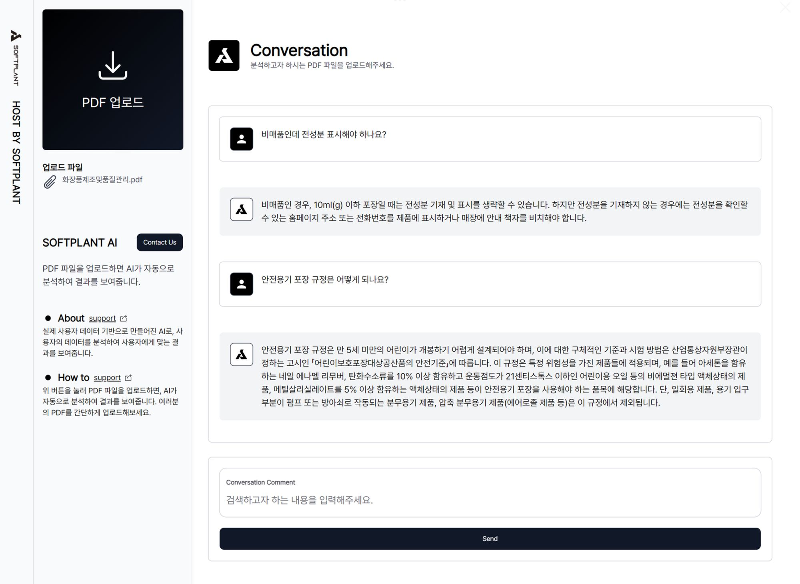

S.P.A
Softplant Personalized AI
지금 소프트플랜트의 새로운 기술상담 AI를 체험해보세요.
귀사의 제품과 기술을 정확히 알고 있는 AI가
전문적인 기술상담을 대신해드립니다.

지금 소프트플랜트의 새로운 기술상담 AI를 체험해보세요.
귀사의 제품과 기술을 정확히 알고 있는 AI가
전문적인 기술상담을 대신해드립니다.
Vector DB와 LLM 기술을 연결시킴으로써,
복잡한 문서의 의미를 이해하는 폭이 혁신적으로 넓어졌습니다
상담내용 및 답변 내용이 쌓일수록
귀사에 특화된 내용으로 분석결과를 도출할 수 있습니다.
자체 AI 엔진을 고객사가 단독으로 사용하는 클라우드
서버형태로 구축해드립니다.
모든 데이터를 암호화해서
전송하고 저장합니다.
회사의 중요한 정보 및
기술자산이 외부에 노출될 일이
전혀 없습니다.
기존 운영중인 상담채널 또는 상담 방법을 유지하면서
AI 상담 서비스를 추가할 수 있습니다
별도 서비스 페이지를 만들 필요없이, 운영중인
웹사이트 (카카오톡 채널)에 바로 연결할 수 있습니다.
AI가 귀사의 스타일에 맞게 메일을 회신할 수 있습니다.
위스퍼 AI의 한국어 패치는 성능 향상을 위해 특별히 설계되었습니다. 이 패치를 통해 한국어 데이터 처리 능력이 크게 개선되어, 더 정확하고 효율적인 언어 인식 및 처리가 가능해졌습니다. 이러한 발전은 위스퍼 AI를 사용하는 모든 이용자에게 더 나은 경험을 제공합니다.
최신 LLM 기술과 위스퍼 AI의 한국어 패치를 통합하여 AI 성능을 크게 향상시켰습니다. 이를 통해 한국어 데이터 처리의 정확도와 효율성이 대폭 개선되었습니다. 이러한 기술적 발전은 고객 맞춤 서비스의 질을 높이는 데 중요한 역할을 하고 있습니다. .
react-native-voice를 사용하여 보이스 인식 기능을 구현하고 있습니다. 더욱 정확한 인식을 위해, 자체적인 필터링 시스템을 추가하여 성능을 개선하고 있습니다. 이를 통해 사용자의 음성 명령을 보다 명확하고 정확하게 파악할 수 있게 되었습니다.
실제 사용자가 업로드한 파일을 바탕으로 지속적으로 보정되어, 언어 인식의 정확도와 성능을 강화하고 있습니다. 이러한 지속적인 데이터 개선을 통해 Lang Chain은 사용자에게 더욱 정교하고 맞춤화된 언어 처리 경험을 제공합니다.
최신 웹 & 앱 기술을 활용하여, AI 서비스를 웹 플랫폼에서 효율적으로 제공하고 있습니다. 이를 통해 Lang Chain의 고급 언어 처리 기능과 벡터 데이터 기반의 서비스를 사용자에게 쉽게 접근할 수 있도록 하고 있습니다. 이러한 기술적 통합은 웹을 통한 AI 서빙의 가능성을 확장시키고, 사용자 경험을 대폭 향상시키고 있습니다.
Tesseract 와 Google Cloud Vision API를 사용하여 이미지 내의 텍스트를 인식하고 분석하는 정확도를 한층 더 향상 시켰습니다. 이미지에서의 객체 탐지, 분류, 텍스트 추출 등 다양한 기능을 빠르게 구현할 수 있어 고객의 다양한 Need에 맞는 AI 솔루션을 신속하게 개발할 수 있도록 지원합니다.
직접 AI 연구개발팀을 꾸릴 필요 없이, 귀사의 필요사항에 맞는
최적의 오픈소스 솔루션을 활용하세요.API 통합을 통해,
인공지능의 정확도를 개선하고, 개발 과정을 혁신적으로,
간소화할 수 있습니다. 이를 통해 기술적 장벽을 낮추고,
비즈니스 목표 달성에 보다 집중할 수 있습니다.
초기단계에 AI 도입에 대한 귀사의
우선순위 및 요구사항을 철저하게 분석합니다.
보안과 신속한 서비스 제공을 고려하여 전용클라우드 인프라를 구축하여 데이터의 안정성을 확보합니다.
데이터 정제를 통해 데이터의 품질을 향상시키고, 정확한 학습을 위해 노이즈를 제거합니다.
높은 효율성을 위해 고객사의 자체 AI 엔진을 사용하여 데이터 학습을 진행하며, 특화된 서비스를 위한 기반을 마련합니다
고객사의 고유한 상담 스타일을 파악하고, AI가 이를 습득하여 일관된 고객 경험을 제공합니다.
기존의 상담 채널이나 방법을 변경하지 않고, AI 서비스를 원활하게 연계하여 신규 기술을 채택하는 부담을 최소화합니다.
모든 과정을 완료하고, 고객사의 승인을 얻은 후 AI 기술상담 서비스를 원활하게 오픈하여 기대치를 충족시킵니다.
서비스가 오픈된 이후에도 지속적인 모니터링과 유지보수를 통해 시스템을 최적화하고, 신속하게 대응할 수 있는 체계를 구축합니다.